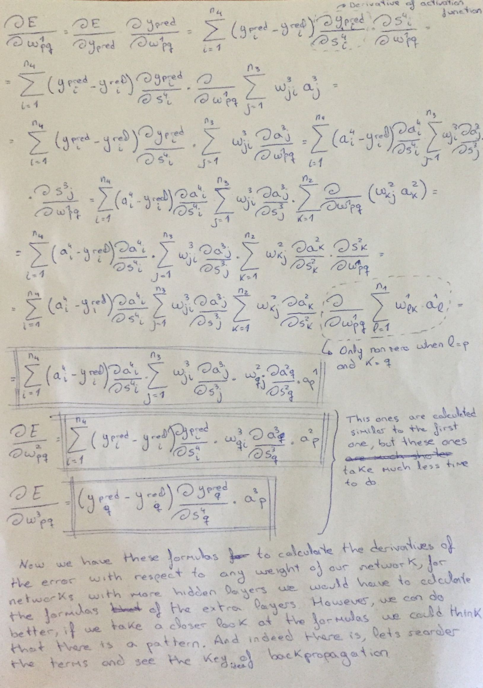
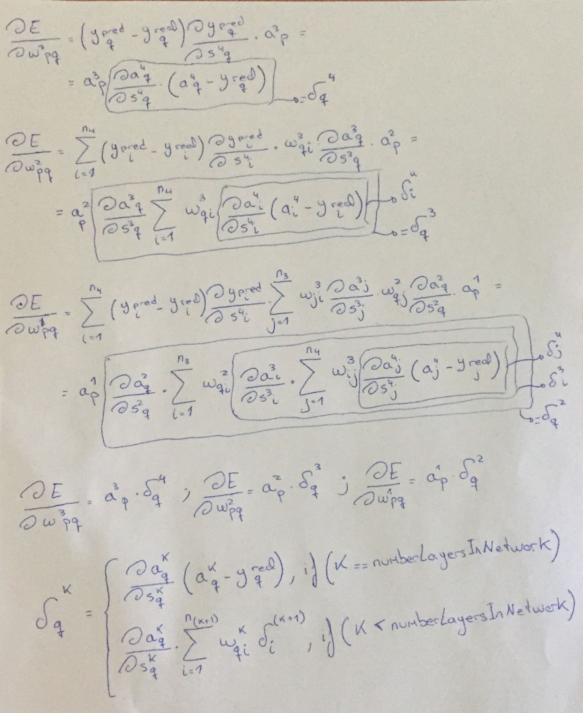

This project is a follow up of the perceptron project. There I implemented a mathematical model that tries to imitate the behaviour of a real single neuron, this model is called a perceptron and it can be used for solving supervised learning problems. Now I am implementing an artificial neural network (a simple one: feed foward and fully connected), which is a mathematical model that tries to imitate the behaviour of our brains (a network of neurons).
Carlos Domínguez García
Note that the goal of this project was just to implement a simple neural network to see if I really understand them, this is not intended to be a very optimal and bug-free implementation, even could be that I just don't really understand them and I just implemented something completly different (but thanks to the math formulation done before the implementation and testing I think I got it right). That being said, now I will explain how to use the network: when constructing the network you have to pass as parameters an object indicating the number of layers and neurons in them. Also you have to pass the learning rate and the number of iterations for gradient descent. After that you can train it by calling the train method with the sample data and label as parameters. Finally you can use the method predict by passing the testing data to see the prediction of the network.
After the classes, there is a sample code that uses the neural network trained with the iris dataset. I also tested it with the logic XOR, AND and OR functions.
// X is a number array of [ numSampleData ][ numFeaturesInASample ]
// Y is a number array of [ numLabels ][ numLabelComponents ]
let net = new NeuralNetwork({
numInputNeurons: 4,
numHiddenLayerNeurons: [10,5],
numOutputLayerNeurons: 3
}, 0.01, 100000);
net.train( X, Y );
net.predict( X[0] );
As I said in the perceptron project, there is plenty of information about neural networks on the web, so I won't go very in depth explaining them. If you know spanish, there is a video series that explain very in depth the math behind the neural networks. And there is a good video in English implementing a neural network in C++, I took some ideas about the implementation from there. A neural network, as the name suggest, is a set of various neurons connected between them. In the model, however, this connections follow an order: we have layers of neurons whose outputs are connected to the inputs of the following layer. Neurons of the network are as simple as in the perceptron model, however, in the code you will see more going on the neuron class, that is just how I decided to implement it. This extra things come as a necesity because of the complexity added when finding the optimal weights for the network: in a single neuron the derivatives of the error with respect to a weight are very straightfoward, but now the output of the network depends, not only of its input weights, but also it depends on weights of neurons of previous layers, so some derivatives are very large. As you will see in the Backpropagation section this extra things in the neuron class are a clever "trick" so we can calculate the derivative of the error with respect to any weight, no matter the number of layers in the network.
So far I haven't said how do we get the output of the network. If you remember the perceptron, a single neuron just takes its inputs, perform a weighted sum and that goes to an activation function whose output will we the output of the neuron. In a network each neuron does the same thing except the ones of the input layer, those just propagate the input that we gave to them. The output of each neuron is passed as input to each neuron of the next layer until the output layer, there we take the outpus as the prediction of the network.
One last thing to note before moving to finding the optimum weights. We have to add an extra neuron in the output and hidden layers with a constant output of 1. In the perceptron project we have a threshold/bias/constant term that is added to the weighted sum so we can do a better function approximation, in that project we considered that term as a one more weight. So the neuron with the constant one is for the bias, this way we have one more weight in each neuron of the next layer that is multiplied by a 1, so that is the neuron bias. And the reson of that extra neuron instead of having the neuron class handle it is that this way is easier.
As you may already know, the purpose of every supervised learning model is to learn a function given some training data and labels. This way we can use it to make predictions about new data. The way we train the network is very easy, just like other models we choose an error function and ajust the weights of the network to minimize the error. The error function that I chose for this network is the sum of square errors (see in the network example below)
Now we are going to calculate the optimal weights for the network. For this we are going to use gradient descent, so we need the derivatives of the error with respect to each weight. If the network has many hidden layers, the derivatives of some weights would be really large. However, thanks to the topology of the neural networks, we can see a pattern to the derivatives functions between weight layers. Now I will show you an example of a neural network with 2 hidden layers, in this example I calculate the derivatives of the error with respect to the weights (and show the process of the most lengthy), at the end you will see said pattern which is the core idea of backpropagation.
Below is the network example and the notation. Just in case it is not clear, the 's' are the weighted sum and the 'a' are the result of applying the activation function to the corresponding s. The neurons with a fixed 1 as output are made up neurons just to think of the bias term as one more weight.

Now, here are the derivative of the error with respect to the weights. The p and q subscripts are parameters representing any weight of the layer. Though it may seem some dense calculus, it is really easy, we are only applying the chain rule a lot. Another thing to note is that those terms that I left as derivatives of some 'a' with respect to some 's', those are the derivative of the activation function with respect to the weighted sum, this way the formulas are independent of what activation function you chose.
Finally, lets see the core idea of backpropagation by reordering the terms.
